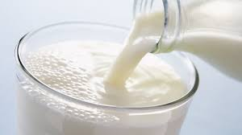
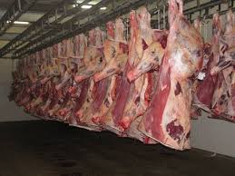

Video: Goats relseased for grazing
Learn the basics of goat farming and how we raise healthy goats.
Audio: The Goat Enjoying at our farm
Goat Milk and Meat Photos

Fresh goat milk ready for sale.

Premium goat meat products available for purchase.